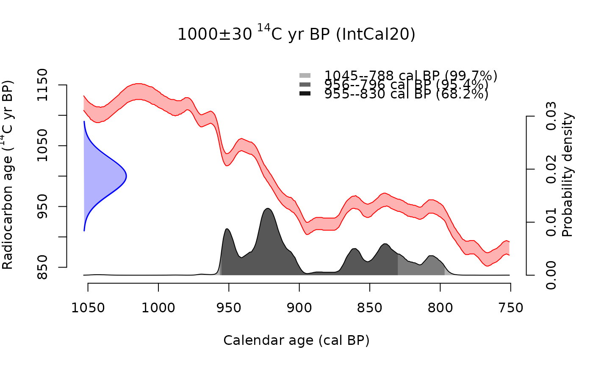
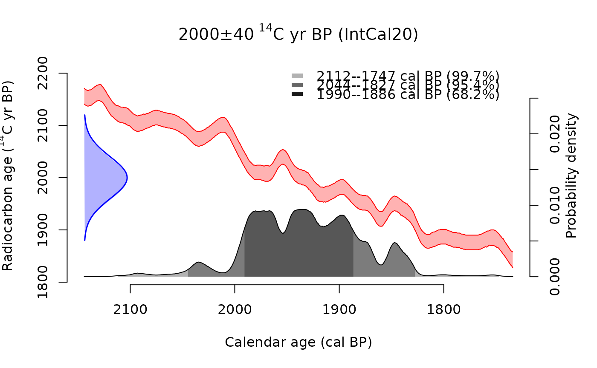
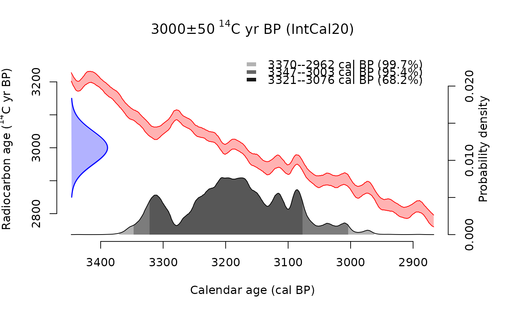

Plots each element of a cal vector as a separate calendar probability
distribution. Use par(mfrow) or par(mfcol) to arrange multiple plots.
Usage
# S3 method for class 'c14_cal'
plot(
x,
...,
max.plot = 20,
resolution = NULL,
fixed_xlim = FALSE,
show_curve = TRUE
)Arguments
- x
A cal vector of calibrated radiocarbon dates.
- ...
Additional arguments passed to
plot.default().- max.plot
Maximum number of plots to generate. A warning is issued if
length(x) > max.plotand only the firstmax.plotelements will be plotted. Default:20.- resolution
Resolution of the age grid in years. If
NULL(default), automatically calculated to produce approximately 500 points across the age range for smooth curves.- fixed_xlim
Logical. If
TRUE, all plots share the same x-axis range (calculated from all dates). IfFALSE(default), each plot uses its own age range focused on that specific date.- show_curve
Logical. If
TRUE(default), plot the calibration curve as the main plot with the probability distribution overlaid on the right y-axis. IfFALSE, only show the probability distribution.
Examples
x <- cal(c(1000, 2000, 3000), c(30, 40, 50), IntCal20)
plot(x)



# Arrange multiple plots
par(mfrow = c(2, 2))
plot(x)
dev.off()
#> null device
#> 1
# Use same fixed x axis limits for all plots
plot(x, fixed_xlim = TRUE)
# Hide calibration curve
plot(x[1], show_curve = FALSE)